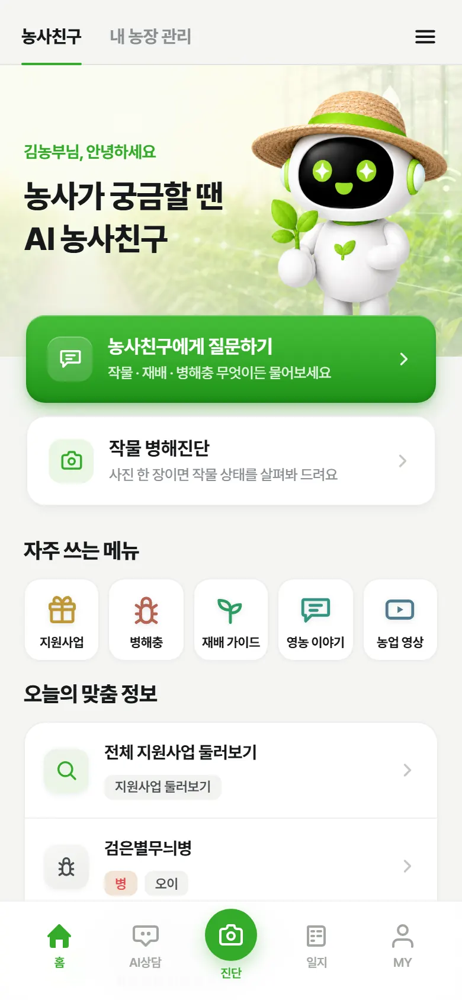
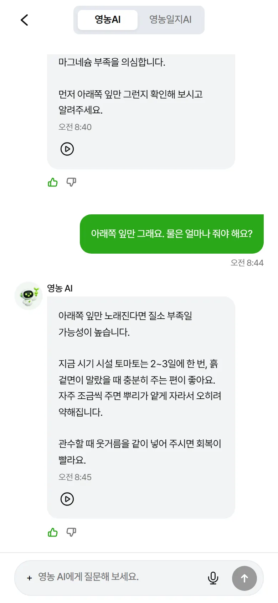
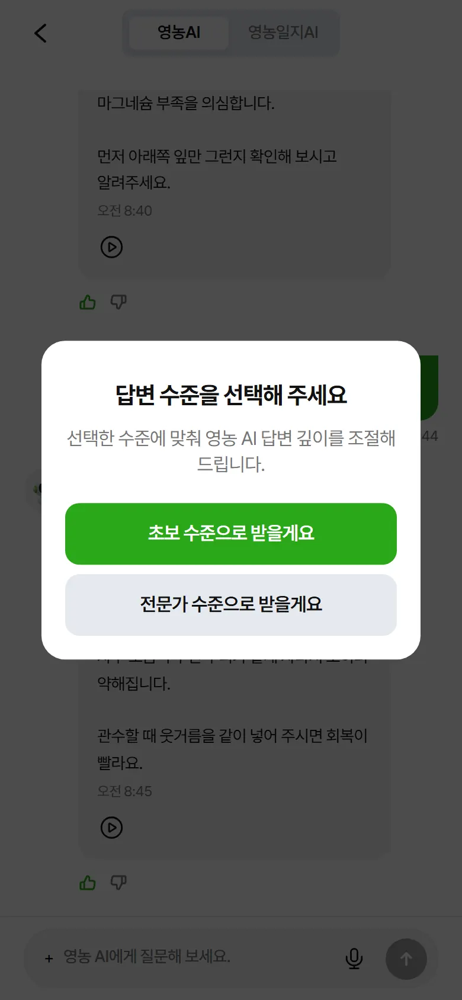
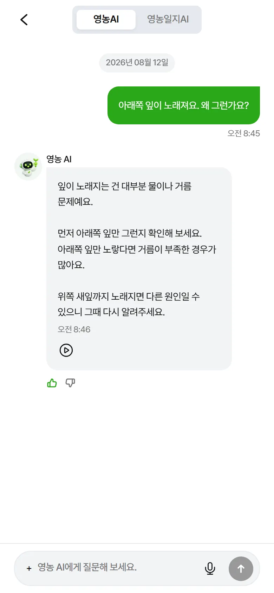
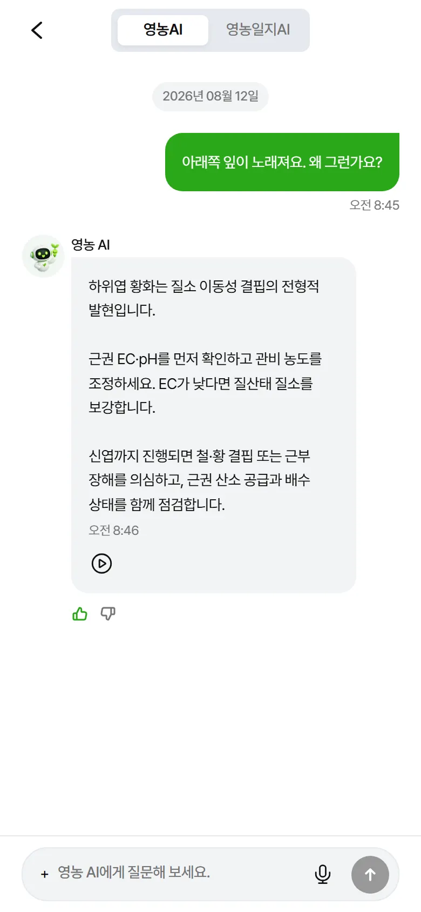
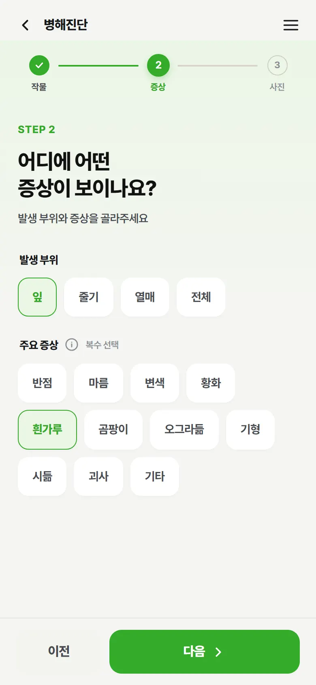
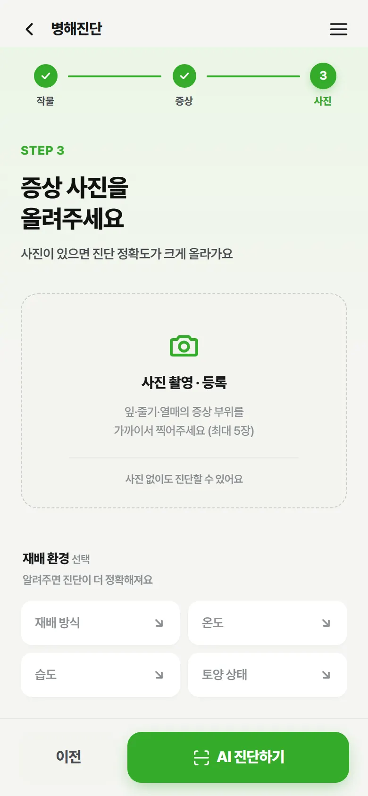
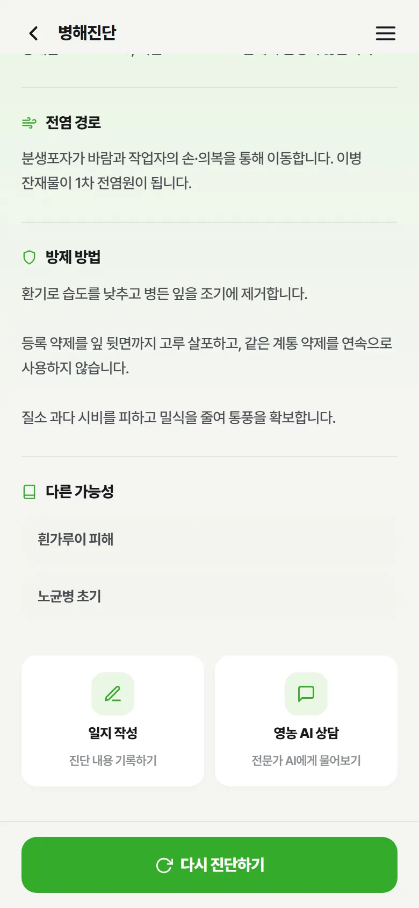
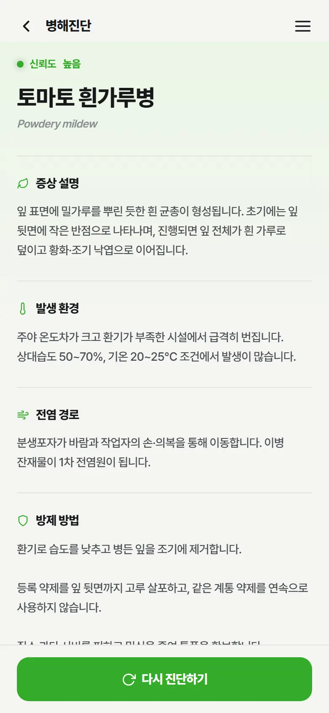
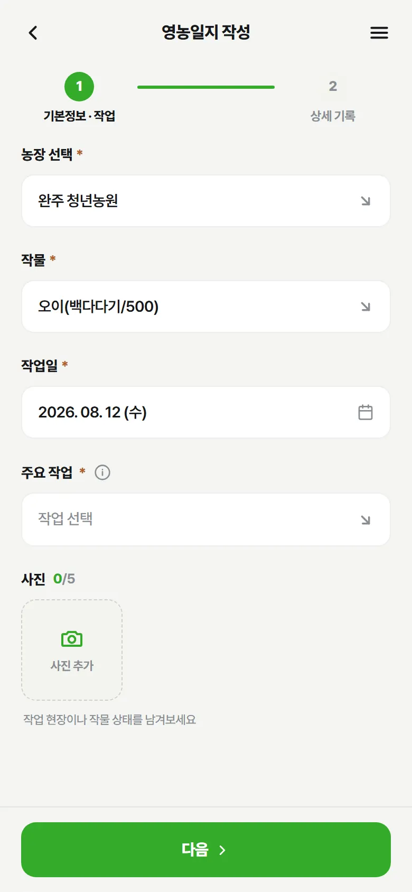

Every farmer deserves an expert in their pocket.
Farm Friend is an AI companion that reads a photo of a struggling crop and answers a farmer's question the way a trusted expert would — in plain language, any hour of the day.

KMA short-term forecast
Weather for the exact plot a farmer registered — not just the nearest city.
RDA's NCPMS
Every diagnosis links back to Korea's official crop pest management database.
Ask anytime, get an answer right away.
A tomato grower asks why the lower leaves are yellowing. Farm Friend asks one follow-up question, then explains the cause and what to do next.

The same question, answered at a different depth.
Pick a level once, and Farm Friend keeps using it. Beginners get plain next steps; specialists get the cause and the evidence behind it.
1Pick a level, once
2Beginner — what to do first
3Expert — the cause, and the evidence



Doesn't stop at a photo, it asks first.
When it isn't confident, it says so — "inconclusive" is a real answer here, not a forced guess.
1Symptom and location, first
2A photo sharpens the answer
3Evidence, confidence, alternatives



The government's data — not the AI's opinion
Every diagnosis links back to Korea's National Crop Pest Management System (NCPMS), the Rural Development Administration's own database. The AI organizes the explanation — it doesn't invent the facts.

Your farm's record, day by day.
Register a plot's location and crop once, then log every spray, harvest, and task in the diary as you go.

When AI isn't enough, a person answers
Expert questions route to an actual specialist by category and stay open until answered. Farmers can rate the answer, and see support-program deadlines alongside it.

Not just sensors — a decision-support system.
ROUTE17 gateways collect temperature, humidity, and CO2 around the clock, and AltisAI turns that stream into action — catching anomalies early and recommending the best operating conditions before a problem costs you the harvest.
Receiving live data

Sensor data, in. AI guidance, out.
ROUTE17 collects the data; AltisAI's AI analyzes it for early alerts and optimal operating conditions.
Data collection & analysis service
- Real-time monitoring of equipment and sensor data
- Early detection and alerts for anomalies
- Automatic generation of operational status reports
- Data-driven maintenance scheduling
- Analysis and reports on work efficiency
AI-based decision support system
- AI-based analysis of equipment operating patterns
- Predictive maintenance timing
- Optimal operating conditions for each piece of equipment
- Operating guides to improve productivity
- Operating scenarios to reduce costs


Don't grow this season alone.
Meet Farm Friend in the app — free to download, ready whenever a question is.
 Scan with your phone
Scan with your phone